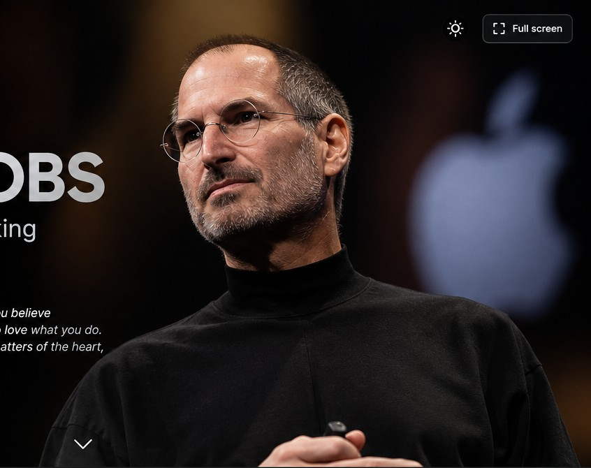

Кто говорит?
Экспертность создает опыт создателя продукта. Честный рассказ о неудаче делает его ближе к слушателю.

Анализ публичных выступлений
Четыре выступления, один принцип: сложную идею легче принять, когда спикер превращает её в ясную человеческую историю. Исследование анализирует риторические приёмы и наблюдаемые элементы подачи.
Ваша работа заполнит большую часть жизни… единственный способ делать великие дела — любить то, что вы делаете
Источник цитаты: Stanford Commencement Address, 12 июня 2005 года. Формулировка дана в русском переводе; оригинальный текст приведён в разделе Stanford.
Команда: Нуржау Нурхан — вступление, анализ Stanford и заключение · Нурсултан Рассулов — анализ презентаций iPod, iPhone и iPad. Оба участника отвечают на вопросы аудитории.
Цель и метод
Мы доказываем, что Джобс убеждает не одной харизмой. Он последовательно соединяет доверие к себе, эмоцию аудитории и понятное доказательство.
Экспертность создает опыт создателя продукта. Честный рассказ о неудаче делает его ближе к слушателю.
Личная история, пауза перед развязкой и момент раскрытия продукта создают интерес, сочувствие или радость.
Цифры переводятся в бытовую пользу. Сравнение и демонстрация помогают аудитории самой увидеть вывод.
Этос, пафос и логос рассматриваются как способы убеждения. Определения: Purdue OWL, Aristotle’s Rhetorical Situation.
Корпус исследования
Преобразование технической характеристики в образ личной свободы.
анализЛичная история как источник доверия и эмоциональной связи.
анализНапряжение, повтор и демонстрация превращают анонс в событие.
анализАргумент о новой категории проверяется привычными сценариями.
анализКаждое выступление представлено видеозаписью и первичным либо близким к первичному источником. Полный список ссылок находится на слайде 09.
Выступление 01 · 23.10.2001
«1,000 songs in your pocket»
Джобс доказывает ценность не термином «5 GB», а понятным результатом: тысяча песен рядом с человеком.
Наблюдение: формула «1,000 songs in your pocket» заменяет техническую характеристику ёмкости образом, который легко представить. Интерпретация: это конкретизация и краткий слоган. Цель: сделать преимущество понятным и запоминающимся.
Что проверить на видео: момент, когда Джобс достаёт iPod из кармана. Интерпретация: предметная демонстрация поддерживает словесный образ и служит наглядным доказательством компактности. Укажите точный таймкод после просмотра вашей копии записи.
Этос — опыт создателя продукта.
Пафос — образ личной музыкальной коллекции.
Логос — ёмкость переведена в понятную пользу.
Выступление 02 · 12.06.2005
«Today I want to tell you three stories from my life.»
Наблюдение: Джобс рассказывает о неудачах, уходе из Apple и болезни от первого лица. Интерпретация: личный опыт создаёт этос свидетеля, а не только статус руководителя. Цель: показать, что выводы основаны на пережитом опыте.
Три короткие истории дают ясную рамку. В каждой есть проблема, личный опыт и сформулированный урок, поэтому речь легко удерживать в памяти.
Что наблюдать: темп, паузы, положение рук и взгляд в конкретном фрагменте. Интерпретация: сдержанная подача может направлять внимание на содержание. Это аналитическая интерпретация, а не доказательство внутреннего состояния оратора. Добавьте проверенный таймкод после просмотра.
Этос — личный опыт от первого лица.
Пафос — истории о потере, любви и конечности жизни.
Логос — три истории организуют выводы в ясную структуру.
Выступление 03 · 09.01.2007
«These are not three separate devices. This is one device.»
Наблюдение: Джобс повторяет три функции — iPod, телефон и интернет-коммуникатор — перед раскрытием iPhone. Приём: трёхчастная конструкция, повтор и отложенная развязка. Эффект: аудитория сначала формирует ожидание, а затем переосмысливает перечисление как единый продукт.
Триада и риторический вопрос «Are you getting it?» вовлекают аудиторию в совместное открытие. Логический вывод появляется после того, как зал уже сам сопоставил части.
Что проверить: жесты, взгляд и паузу перед показом устройства в записи. Интерпретация: синхронизация речи с демонстрацией превращает утверждение в визуально проверяемый пример. Укажите точный таймкод после просмотра; не оценивайте реакцию зала без наблюдаемого подтверждения.
Этос — выступает как человек, отвечающий за продукт.
Пафос — ожидание и кульминация раскрытия.
Логос — объединение функций в одном устройстве.
Выступление 04 · 27.01.2010
«A third category of device… has to be far better at some key tasks.»
Джобс формулирует условие существования нового устройства: оно должно выполнять ключевые задачи лучше ноутбука и смартфона. Так он заранее создает критерий оценки iPad.
Наблюдение: после формулировки критерия Джобс показывает веб, почту, фотографии, видео и книги. Приём: демонстрация по сценариям использования. Логос: зритель получает примеры, по которым может оценить заявленную пользу.
Наблюдение: Джобс использует iPad сидя и выполняет действия на экране. Интерпретация: поза и демонстрация показывают контекст использования. Предположение о темпе или реакции аудитории следует подтверждать конкретным фрагментом видео.
Этос — позиция разработчика, представляющего продукт.
Пафос — интерес к новой категории устройства.
Логос — заявленный критерий и демонстрация задач.
Общий вывод
Опыт создателя и готовность честно говорить о собственных ошибках.
Эффект: аудитория видит эксперта, который отвечает за свой продукт и свои слова.
Личный сюжет, простые слова, интрига до раскрытия нового устройства.
Эффект: слушатель эмоционально включается, прежде чем услышит все аргументы.
Сравнение, измеримая польза и демонстрация вместо длинного списка свойств.
Эффект: вывод можно проверить прямо во время выступления.
Открытая поза, точные жесты, паузы, работа с экраном и предметом.
Эффект: тело подтверждает смысл речи и удерживает внимание.
Контакт с аудиторией. В выбранных записях нет отдельной сессии вопросов и ответов. Джобс поддерживает диалог иначе: задает аудитории вопросы, делает паузу для реакции и отвечает на возможные сомнения следующей демонстрацией.
Офлайн-видеотека
В архив включена одна локальная видеозапись — Stanford Commencement Address, 2005. Она воспроизводится прямо на странице сайта и не требует доступа к YouTube. Остальные три выступления анализируются по цитатам и указанным источникам, но их видеофайлы в проект не включены.
Три истории о жизни, потере и поиске своего дела.
Перед выступлением проверьте звук и запустите видео до начала защиты.
Источники и итог
Джобс убедителен, потому что строит выступление как путь: понятная проблема, один главный тезис, видимое доказательство и точная эмоция.
Заменять технический факт человеческой пользой, которую можно представить сразу.
Создавать паузу перед главным выводом или демонстрацией, а не говорить в одном темпе.
Подтверждать тезис примером, жестом или предметом, чтобы слова не оставались абстракцией.
Список источников
Метод: цитаты и даты сверяйте с указанными источниками; таймкоды добавьте после просмотра именно той версии видео, которую будете показывать. Невербальные выводы — интерпретация наблюдаемого поведения, а не утверждение о намерениях спикера. Для защиты используйте стрелки ↑ и ↓ или навигацию справа. Для воспроизведения видео интернет не нужен: встроен только файл Stanford 2005. Остальные видеоссылки в списке источников служат справочными ссылками и для показа не требуются. Всего 10 разделов из разрешённых 10.